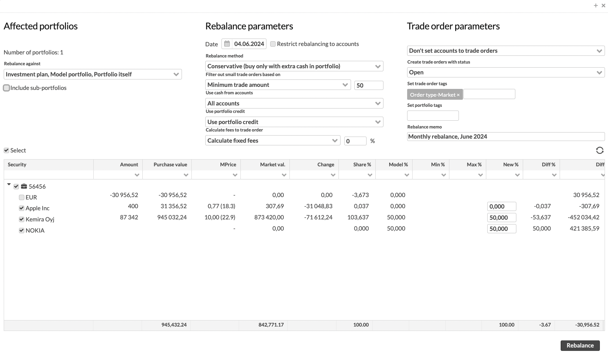

Rebalance window
You can create model portfolios, strategies or investment plans and use them to keep your investment portfolios in balance. Rebalancing creates trade orders to buy and sell securities according to the model. For general information about rebalancing approaches and for instructions, see Rebalance in FA User guide.
The Rebalance window allows you to define the rebalance parameters and the securities to rebalance. The window lists securities in the portfolio or in the model linked to the rebalanced portfolio and indicates the shares of these securities in the investment portfolio and model. The portfolio account is also included in rebalancing.
At the top of the Rebalance window, you can define the rebalancing parameters.
|  |
Affected portfolios
The Affected portfolios section defines which portfolios are rebalanced.
- Rebalance against
Target for rebalancing, in order of descending priority. The system uses the first target in the list if defined. Otherwise, the system the target with the next highest priority. The targets can be:
"Model portfolio", "Investment plan", "Strategy" – Model portfolio, investment plan or strategy linked to the portfolio.
"Portfolio itself" – Target shares you specify in the Rebalance window.
"Empty portfolio" – An option to empty the portfolio – this will set all the new shares as 0% and sell everything, regardless of the linked model or plan.
- Include sub-portfolios
Aggregates positions and investment plan/ model portfolio contents also from the rebalanced portfolio's subportfolios. This allows you to divide holdings into subportfolios and rebalance everything at once through the main portfolio. Trade orders are created either to the main portfolio or the sub-portfolios based on which portfolio or portfolio's investment plan / model portfolio the trade order's security can be found in: for sells of existing positions, trade orders are created in the same portfolio where the position currently is, and for buys, trade orders are created in the same portfolio which has the position in the investment plan / model portfolio.
- Asset group
The asset group the strategy is based on (for example, geographical, industry, or asset class).
Rebalance parameters
- Date
The rebalancing date. This date affects:
The market prices, rebalanced portfolio shares, trade order amounts. The percentage shares of securities in the portfolio are determined based on the market prices on the rebalancing date. The market prices on this date are used to calculate the amount in the suggested trade orders.
The content of the model portfolio/ investment plan. The target shares are fetched based on the selected rebalancing date
- Restrict rebalancing to accounts
Restrict rebalancing to only reach the target level for portfolio accounts, without any other buys or sells. This feature has different effects depending on the rebalance method (buying with extra cash or using cash from sells) – see Choose rebalance method.
With the conservative rebalancing method, securities are bought and sold only to achieve the target level of the account. If the account has excess cash, the selected securities (largest first) are bought as long as there is available cash but nothing is sold. If the account has a lack of cash, the selected securities (largest first) are sold until the account reaches the target level - nothing is bought and securities are sold only to rebalance the account to the defined level.
With the exchange method, if the account balance is below the target, it is first rebalanced with sells. After this, the excess cash from sells is used to buy the securities to be rebalanced, but securities are sold only to cover all the necessary buys. If there are Executable sell trade orders, the cash coming in from these is taken into account when selling the securities.
With full rebalance, if the account balance is below the target, it is first rebalanced with sells. After this, the excess cash from sells is used to buy the securities to be rebalanced, but securities are sold only to cover all the necessary buys.
Note
You can also define the rebalance settings in Preference ("Define target range for portfolio's cash balance", "Define how much negative cash balance is increased by to cover all negative cash" and "Define how much positive cash balance is decreased by to ensure positive cash balance"). These preferences determine how rebalancing tries to achieve the target level for accounts. See Preference - Portfolios for details.
- Rebalance method
Rebalancing approach: conservative rebalance, full rebalance, full rebalance including outstanding orders, exchange, invest cash, cover for cash, and model change (see Choose rebalance method).
- Buy with
Cash to use for buys:
Current cash only. With this option, you can align the portfolio with the model in two rounds. First, the system sells the excess positions and buys with the current cash. After executing the sells and acquiring cash, the second round buys more positions with the newly available cash to rebalance the portfolio fully.
Existing outstanding trade orders (all statuses except "Open") affect rebalancing in the following way:
Buy trade orders reduce the current cash.
Outstanding trade orders with the same type are taken into account when the system suggests buys and sells. For example, if you should buy a security but you already have a buy trade order for it, the trade amount of the outstanding order is subtracted from the suggested order.
Cash from sells only. With this option, you can sell a portfolio position that is above the target and buy a position that is below the target with the cash you expect to get from selling. You can also rebalance one position and swap it for another without rebalancing your entire portfolio. Cash from suggested sells is estimated based on the latest market prices.
This method requires careful trade order management to ensure you have enough cash to complete the buys.
Existing outstanding trade orders (all statuses except "Open") affect rebalancing in the following way:
Outstanding trade orders with the same type are taken into account when the system suggests buys and sells. For example, if you should buy a security but you already have a buy trade order for it, the trade amount of the outstanding order is subtracted from the suggested order.
Current cash and cash from sells. With this option, you can align the portfolio with the model in one go. Cash from suggested sells is estimated based on the latest prices.
This method requires careful trade order management to ensure you settle the trades promptly and have enough cash to complete the buys. To mitigate the risk, you can set a limit on the cash from sells to use for buys during a full rebalance. For example, instead of counting sell values at 100%, you can count them at 95%. If the prices drop between rebalancing and executing sales, you'll likely still have enough cash to complete your buys. See Preference - Portfolios in FA Back for details.
Existing outstanding trade orders (all statuses except "Open") affect rebalancing in the following way:
Buy trade orders reduce the current cash.
Outstanding trade orders with the same type are taken into account when the system suggests buys and sells. For example, if you should buy a security but you already have a buy trade order for it, the trade amount of the outstanding order is subtracted from the suggested order.
Current cash, cash from sells and from orders. With this option, you can align the portfolio at once, considering the effect of outstanding orders. Before rebalancing, the system calculates expected positions. It sells any expected excess positions and buys with the cash expected to be available after executing these orders.Cash from suggested sells and outstanding trade orders (all statuses except "Open") is estimated based on the latest prices.
This method requires careful trade order management to ensure you have enough cash to complete the buys.
- Use cash from accounts
Accounts to use for buys if you select to buy with extra cash in the portfolio. This option allows you to keep your portfolio fully invested and exclude certain accounts (for example, accrued fee accounts) from rebalancing.
"All accounts" – Use cash on all accounts. You can choose to use available credit or repay the used credit (see the Use portfolio credit field below).
"Cash accounts" – Use cash on the accounts marked as "cash accounts" in the Portfolio window, Accounts tab in FA Back.
"Cash and credit accounts" – Use cash on cash and credit accounts. You can choose to use available credit or repay the used credit (see the Use portfolio credit field below).
"Default account only" – Use cash on the portfolio's default account – the first account in the list in the Portfolio window, Accounts tab in FA Back. If this account is a credit account, you can choose to use available credit or repay the used credit (see the Use portfolio credit field below).
- Filter out small trade orders based on
The minimum size for the trade orders that rebalancing should create. The size restrictions don't apply if you sell an entire position away from the portfolio. Set the minimum difference between the portfolio position and the model as:
"Minimum change % (absolute/ percentage points)" - The difference in percentage points.
"Minimum change % (relative / percentage change)" - The relative difference in percentage.
"Minimum trade amount" - The minimum trade amount in portfolio currency. Alternatively, you can define a Minimum trade amount for each of your securities (see Security window).
"Position is within min/max share" - The difference defined with the minimum and maximum thresholds in the model. Trade orders are created only if your position deviates outside of the minimum and maximum thresholds. The minimum trade amount for each trade order is calculated as follows:
For "buy": ( target share - min share ) * portfolio value
For "sell": ( max share - target share ) * portfolio value
Positions that don't have the thresholds specified int the model are rebalanced without filtering when "Position is within min/max share" is selected.
- Filter out small trade orders based on
The minimum size for the trade orders that rebalancing should create. The size restrictions don't apply if you sell an entire position away from the portfolio. Set the minimum difference between the portfolio position and the model as:
"Diff %pt" – The difference in percentage points.
"Diff %" – The relative difference in percentage.
"Trade amount" – The minimum trade amount in portfolio currency. Alternatively, you can define a Minimum trade amount for each of your securities in FA Back (see Security window).
"Model min/max share" – The difference defined with the minimum and maximum thresholds in the model. Trade orders are created only if the position deviates outside of the minimum and maximum thresholds. The minimum trade amount for each trade order is calculated as follows:
For "buy": ( target share - min share ) * portfolio value
For "sell": ( max share - target share ) * portfolio value
Positions that don't have the thresholds specified in the model are rebalanced without filtering when "Position is within min/max share" is selected.
- Use portfolio credit
Use credit account for buys. Choose if you want to use the positive account balance and available credit for buys, and if you want to cover the negative balance. The option is shown if you selected "All accounts", "Cash and credit accounts" or "Default account only" in Use cash from accounts.
"Don't use portfolio credit" – Use only positive balance on the credit account for buys, without repaying the used credit.
"Use portfolio credit" – Use available credit and positive balance on the credit account for buys, without repaying the used credit.
"Repay portfolio credit" – Use positive balance on the credit account. In case of negative balance, rebalance the credit account account to 0. The cash is rebalanced to the default portfolio account, and you can then repay the credit manually. If a portfolio has no accounts other than the credit account, the credit is repaid automatically.
- Calculate fees to trade orders
An option to calculate fees, or to estimate the effect of an upcoming fee when generating buy and sell trade orders. If a fee is calculated, the effect of the fee is taken into account when determining how many units you can buy with available cash and how much money you get from sells. This allows you to estimate the effects of upcoming transaction fees more accurately. Fees are saved in the Fees field for each trade order.
"Don't calculate fees" - Don't calculate fees in trade orders.
"Calculate portfolio specific fees" - Calculate a transaction fee defined in the portfolio (Portfolio window, Fees tab).
"Calculate fixed fees" - Calculate a fee defined as a percentage in the field available next to the selection.
- Apply fees to trade orders
An option to calculate fees, or to estimate the effect of an upcoming fee when generating buy and sell trade orders. If a fee is calculated, the effect of the fee is taken into account when determining how many units you can buy with you available cash and how much money you get from sells. This allows you to estimate the effects of upcoming transaction fees more accurately. Fees are also saved in the Fees field for each trade order.
"No fees" – Don't include fees in trade orders.
"Portfolio-specific fees" – Include a transaction fee defined for the portfolio in FA Back (Portfolio window, Fees tab).
"Fixed fees" – Include a fee defined as a percentage in the field available next to the selection.
- Use security minimum trade amount
Option to set the minimum trade amount of the security as the minimum trade order amount. A trade order is only created if the amount is at least equal to the security minimum trade amount. If you also use "Minimum trade amount" for Filter out small trade orders based on, rebalancing first applies the filter and then checks the security minimum trade amount.
The system starts rebalancing from the largest potential trade order and works towards the smallest one. If both settings are enabled, the system does the two checks and if a trade order fails them, the following logic is used:
Filter out the trade order without reallocating the trade order if the minimum trade amount is not reached. If the last security to rebalance fails, the trade order is always filtered out.
Reallocate the trade order amount if the security minimum trade amount is not reached.
Example 1: The rebalancing amount is 550. Minimum trade amount is 100. Security minimum trade amount is 600. The system first checks if 550 > 100 (true), and then checks if 550 > 600 (false). No trade order is created.
Example 2: The rebalancing amount is 550. Minimum trade amount is 100. Security minimum trade amount is 300. The system first checks if 550 > 100 (true), and then checks if 550 > 300 (true). The system creates a trade order.
Trade order parameters
Trade order parameters section includes criteria for defining how trade orders are created
- Set accounts to trade orders
An option to define accounts for trade orders (Account field):
"Don't set accounts to trade orders" - Create trade orders with "No account".
"Set the default account to trade orders" - Set the portfolio's default account – the first account in the list in the Portfolio window, Accounts tab.
"Set the currency account (or default account) to trade orders" - Use the account with the same currency as the trade order. If such account doesn't exist, this option uses the default account of the portfolio. If the portfolio doesn't have accounts, then the shared accounts for the portfolio are used in the same order: first using the shared account with the same currency as the trade order, and if not found, then using the shared default account.
- Create trade orders with status
The status of trade orders.
- Align buy and sell dates
Define the settlement date alignment between buy and sell trade orders during rebalancing. You can choose from the following options:
Buy and sell today (default) - Trade orders are created with today's transaction date and the selected trade order status.
Buy when sells are settled - "Buy" trade orders settle only after "sell" trade orders are settled, ensuring cash from sells is available before executing buys. The "sell" trade orders are created to all settle on the same date. The holiday calendar in use for the security determines the settlement date (see Basic info in FA Back reference).
Settle buys and sells on the same day - Both "buy" and "sell" trade orders have the same settlement date. This is useful for synchronized settlement of all trade orders. The holiday calendar in use for the security determines the settlement date (see Basic info in FA Back reference).
- Set trade order tags
Tags to add to trade orders. For example, you can use tags to mark trade orders with execution instructions.
- Set portfolio tags
Tags to add to portfolios affected by rebalancing. This allows you to for example mark the rebalanced portfolios.
- Rebalance memo
Comments and notes on your rebalances, for example, references. Memos are stored in the Rebalance view, which allows you to search for conducted rebalances.
Summary of the rebalanced portfolios
The bottom of the Rebalance window shows a summary of the positions of the rebalanced portfolio(s). The rebalanced portfolios' positions are grouped per rebalanced portfolio: the icon next to the portfolio ID indicates whether the portfolio is rebalanced against model portfolio, investment plan or portfolio itself, and moving your mouse above a portfolio provides you with more details on how the portfolio is rebalanced, such as the name of the linked model portfolio and the full name of the rebalanced portfolio.
The content is divided into columns:
Security - Position affected by the rebalance (a position in the portfolio or a position in the model).
Amount – The current amount (number of units) of the security in the portfolio.
Purchase value – The current purchase value of the position in the portfolio.
MPrice – The latest available market unit price of the security, with the date (and time) of the price shown in parentheses.
Market val. – The total market value of the position in the portfolio with the latest available market price.
Change - The change between the purchase value and the market value of the position.
Share % – The current percentage share of the position in the portfolio, calculated with the current market price from the total value of the portfolio.
Min % and Max % – The minimum and maximum thresholds defined for the position in its investment plan or model portfolio.
Model % – The share of the security in the model portfolio or investment plan.
New % – Target share. The field shows the percentage share of the security in the model, if any model is linked to the portfolio. Otherwise, the percentage share of the security in the portfolio is shown. You can edit the value before rebalancing the portfolio and creating trade orders.
Difference % – The percentage difference between the percentage shares of the security between the portfolio and the model portfolio.
Difference - The difference between the shares of the security in the portfolio and the model portfolio in portfolio currency.
You can select portfolios and the positions to include in rebalancing.
When the information for the rebalancing is defined and manually adjusted if necessary, the investment portfolios are rebalanced and trade orders are suggested to be created with the Rebalance button.
Trade orders suggested by rebalancing
You can view the suggested trade orders after you click Rebalance. You can use filters to search for trade orders within the suggestion.
Only visible trade orders are saved - to save all suggested trade orders, clear all filters.
Saving the trade orders is done in the background - you can close the trade order listing and continue using FA while the trade orders are being created. Once the trade order creation is finished in the background, you will see a notification at the bottom-right corner of the view: "Trade orders done. Created trade orders: x.
You can view the trade orders in the Trade orders view. If a portfolio is rebalanced again, Open trade orders are replaced with new trade orders.